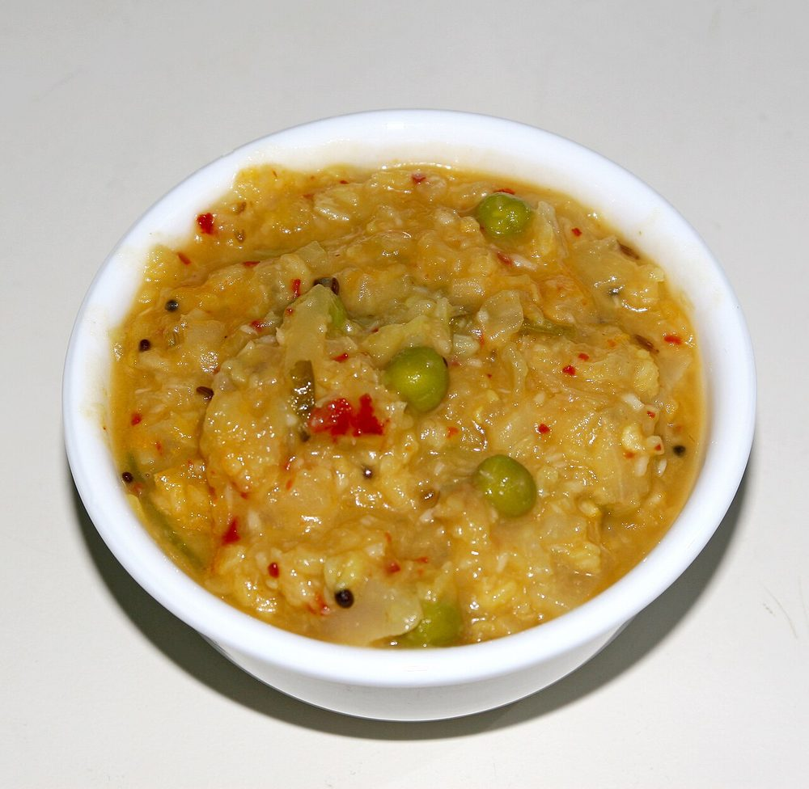

Contains: mustard
Checked against the ingredient list for ten allergens: milk, egg, fish, crustaceans, tree nuts, peanuts, sesame, mustard, soy and gluten. Brands vary, so read the label on anything new to you.
Ingredients
Quantities for 4.
- 500g, peeled, deseeded and cubed 2cm Bottle Gourdash gourd or chow chow works the same way
- 1/2 cup Moong Dal
- 5 tbsp fresh, grated Coconut
- 1.5 tsp Cumin Seeds1 tsp in the grind, 1/2 tsp in the tempering
- 2 Green Chilli
- 1 tsp, raw Riceground with the coconut for bodyoptional
- 1/2 tsp Turmeric
- 1/4 tsp Asafoetidause compounded-free hing to keep this gluten-free
- 2 tbsp Coconut Oil
- 1 tsp Mustard Seeds
- 1 tsp Urad Dal
- 2, broken Dried Red Chilli
- 1 sprig Curry Leaves
- 2.5 cups Water
- to taste Salt
Cookware
pressure cooker, blender, stovetop
Before you start
- Soak the raw rice with the coconut for 10 minutes before grinding so it breaks down completely.
- Peel the gourd thickly and taste a sliver raw. A bitter one must be thrown away, it will ruin the pot.
- Cook the dal and the gourd separately; the gourd collapses long before the dal is done.
Method
- Pressure cook the moong dal with 1.5 cups water and the turmeric for 3 whistles, then mash it lightly.
- Meanwhile simmer the cubed gourd in 1 cup water with a little salt for 8 minutes, covered.
- Test it with a knife. It should give easily but still hold its cube shape.Gourd goes from tender to mush in about two minutes, so check early.
- Grind the coconut, 1 tsp cumin seeds, green chilli and raw rice with 1/2 cup water to a smooth paste.
- Add the mashed dal to the gourd along with the salt and bring it to a simmer.
- Stir in the ground coconut paste and the hing and cook 5 minutes on low heat.Do not let it boil hard after the coconut goes in or it turns grainy.
- Loosen with hot water until it is thicker than sambar but still spoonable.
- Heat the coconut oil, pop the mustard seeds, add the urad dal, remaining cumin, red chilli and curry leaves.
- Pour the tempering over the kootu and serve with rice and a poriyal.
Storage
Keeps 2 days refrigerated. It thickens considerably. Reheat gently with a splash of water, without boiling.
Nutrition Good estimate
Low protein: 8 g a serving, 13% of the calories
| Per serving185 g | Per 100 g | |
|---|---|---|
| Calories | 256 kcal | 139 kcal |
| Protein | 8.5 g | 5 g |
| Carbohydrate | 26.7 g | 14 g |
| of which sugars | 3.1 g | 2 g |
| Fibre | 7.2 g | 4 g |
| Fat | 14.0 g | 8 g |
| of which saturated | 11.3 g | 6 g |
| of which unsaturated | 1.5 g | 1 g |
Ingredients given to taste count as zero, so the real figures run a little higher. Nearest database match used for asafoetida, curry leaves, urad dal. Estimated from raw ingredients using USDA FoodData Central.
Times, yields, allergens and nutrition are guidance. Use your own judgement on doneness and on storing. More in About.